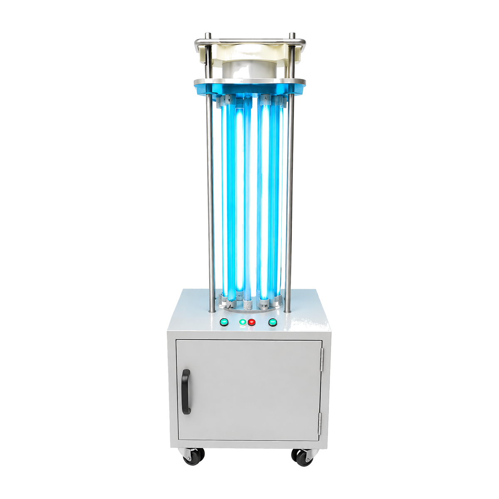
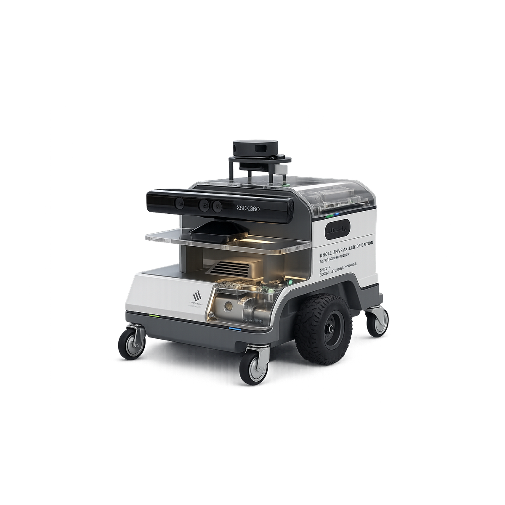

Total Robot Plan
456Four-version ULTRON roadmapOperational UV-C Units
210Working product lineR&D Test Missions
42Insight platform this monthResearch Data Events
28.4KPrivacy-safe operational recordsConnected Hospitals
30Current and planned partnersCritical Alerts
3Requires engineering reviewPlatform Uptime
98.4%Last seven daysULTRON-UV-001Working

UV-C Guardian
Autonomous UV-C disinfection with route coverage, runtime, safety events and operational research data.
Open working report →
ULTRON-Insight-002Ongoing

Insight Nexus
Environment sensing, hospital logistics and privacy-aware human-behaviour pattern analysis.
Open development report →
ULTRON-Vitals-003Upcoming
VitalWatch
Real-time patient observation that flags possible vital, mobility and recovery irregularities for staff review.
Open simulation report →
ULTRON-MedAssist-004Upcoming

MedAssist
Basic screening support and secure medicine delivery using clinician-authorised patient orders.
Open simulation report →
Research Intelligence LoopHow today’s UV-C robot data improves tomorrow’s ULTRON products
01CollectLiDAR, pose, RGB-D vision, object labels, environmental sensors, and UV-C dose logs—organized by room using the SLAM map.
→
02AnalyseAI identifies crowd, obstacle, workflow and safety patterns
→
03ResearchAdmin teams compare hospitals, zones and mission outcomes
→
04UpgradeValidated findings guide Insight, VitalWatch and MedAssist design
Operations Platform Uptime
Average performance over the last seven days
19 Jul20 Jul21 Jul22 Jul23 Jul24 Jul25 Jul
Product Roadmap Allocation
Four-version operating and development plan
456Total units
ULTRON-UV-001206
ULTRON-Insight-002110
ULTRON-Vitals-00375
ULTRON-MedAssist-00455
Product Readiness
Current maturity by product line
ULTRON-UV-001Working · 94%
ULTRON-Insight-002Ongoing · 61%
ULTRON-Vitals-003Upcoming · 32%
ULTRON-MedAssist-004Upcoming · 23%
Dhaka Hospital Operations
View all hospitals →| Hospital | Robot | Current Work | Research Data | Status |
|---|---|---|---|---|
| Green Life Hospital | ULTRON-UV-001 | Isolation corridor disinfection | Route + occupancy metadata | Operational |
| Dhaka Medical College Hospital | ULTRON-UV-071 | Ward B UV-C cycle | Obstacle and workflow events | Operational |
| Evercare Hospital Dhaka | ULTRON-Insight-002 | Controlled environment scan | CO₂ + movement patterns | R&D Test |
| United Hospital | ULTRON-UV-105 | Route validation | Navigation exception data | Review |
| Labaid Specialized Hospital | ULTRON-UV-132 | Standby | Maintenance baseline | Idle |
Priority Alerts
View alerts →!
Navigation heartbeat lostULTRON-UV-105 · United Hospital
!
Human detected during UV-C cycleULTRON-UV-001 · Green Life Hospital
!
Environmental packet delayedULTRON-Insight-002 · Evercare Hospital
R&D Decisions
View requests →Current Engineering Focus
⌁
Calibrate UV output feedbackULTRON-UV-001
#RD-250726-015
In Progress#RD-250726-015
↗
Human-behaviour metadata modelULTRON-Insight-002
#RD-250726-021
Testing#RD-250726-021
Partner Requests
↗
VitalWatch ward pilotEvercare Hospital Dhaka
#RQ-250726-009
Review#RQ-250726-009